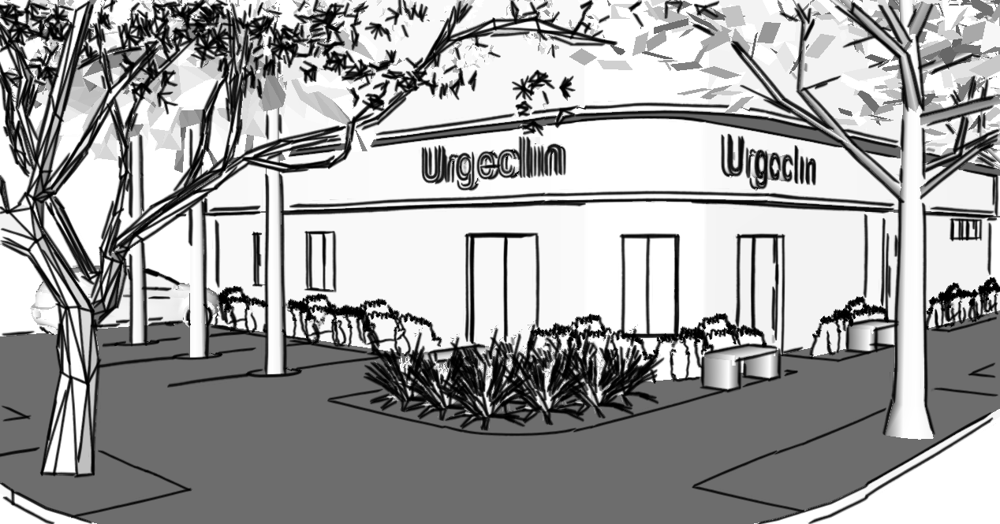

Arquitetura + interiores | Navegantes | Porto Alegre
A clínica de traumatologia carecia de uma reforma , utilizando-se móveis e revestimentos mais atuais, resistentes ao
fluxo de pessoas e fáceis de limpar. Além disso a clínica devia se adequar às normas de saúde vigentes.
Por isso, algumas modificações internas foram feitas para possibilitar a instalação dois sanitários para cadeirantes.
Outras como retirada do rebaixo de forro, e reabertura de janelas que tinham sido cobertas foram feitas para aumentar
a iluminação e ventilação naturais. O layout das salas de atendimento foi modificado para dar mais privacidade aos
pacientes. Também foram substituídos revestimentos e louças dos banheiros, portas, divisórias e o piso de toda clínica.
Porto Alegre, RS.
